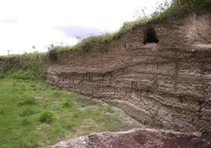
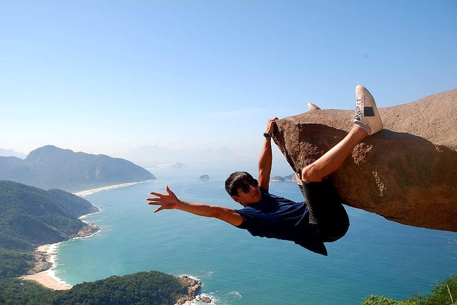
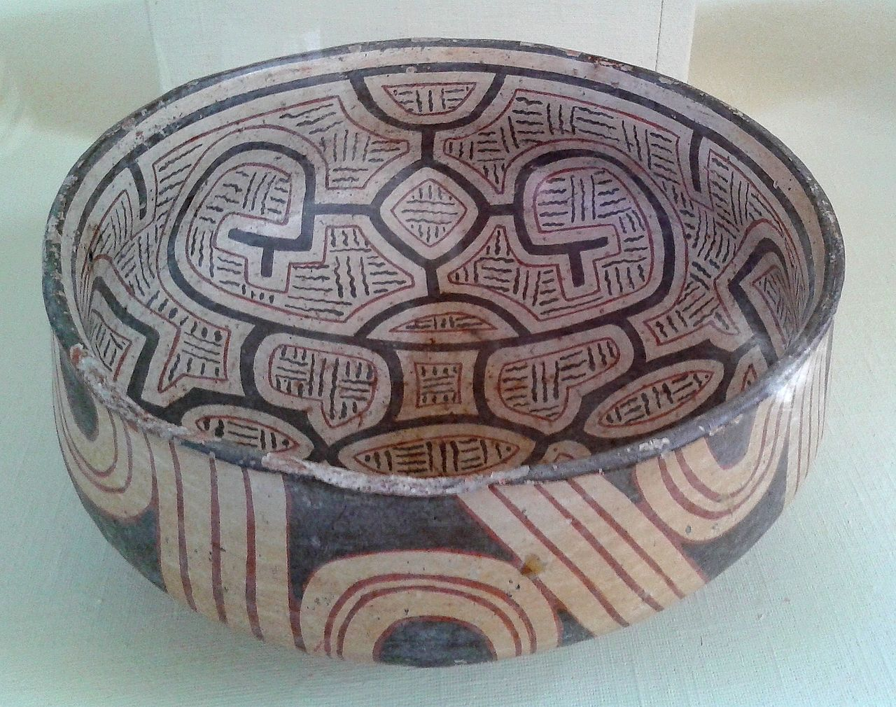
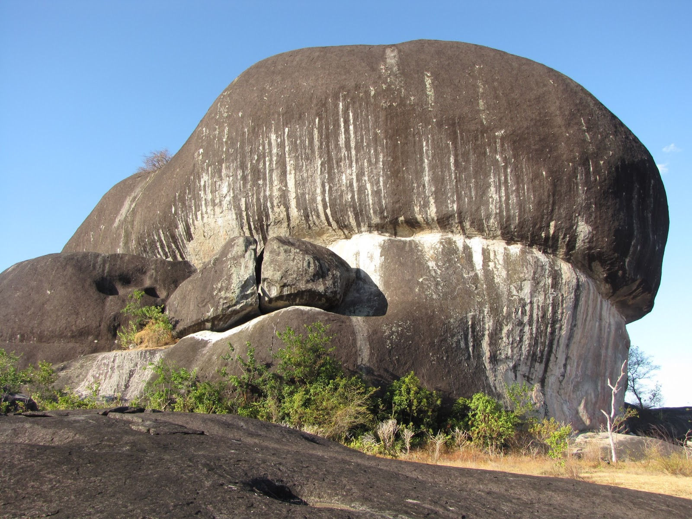
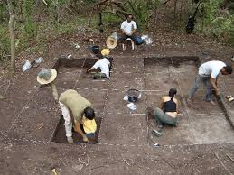

Reliquia 1

Sambaqui de Jabuticabeira
Un sitio con montículos de conchas que datan de hace miles de años, mostrando la dieta y cultura de los pueblos pescadores.
Fecha estimada: 5000 a.C. – 1000 a.C.Sitios arqueológicos con concheros que revelan la vida de pueblos prehistóricos en la costa brasileña.
Más información sobre las reliquias brasileñas...

Un sitio con montículos de conchas que datan de hace miles de años, mostrando la dieta y cultura de los pueblos pescadores.
Fecha estimada: 5000 a.C. – 1000 a.C.
Arte rupestre en rocas que representan escenas de caza y figuras humanas en el estado de Pernambuco.
Fecha estimada: 3000 a.C. – 1000 a.C.
Cuevas con pinturas rupestres y restos óseos de antiguos habitantes en Minas Gerais.
Fecha estimada: 10000 a.C. – 2000 a.C.
Artefactos de cerámica decorada de la isla de Marajó, mostrando patrones geométricos y figuras antropomorfas.
Fecha estimada: 400 d.C. – 1400 d.C.
Pinturas rupestres en la Amazonía que representan escenas de la vida cotidiana y mitos indígenas.
Fecha estimada: 11000 a.C. – 2000 a.C.
Un montículo de conchas en Maranhão que revela la dieta marina y prácticas funerarias de pueblos antiguos.
Fecha estimada: 4000 a.C. – 1000 a.C.